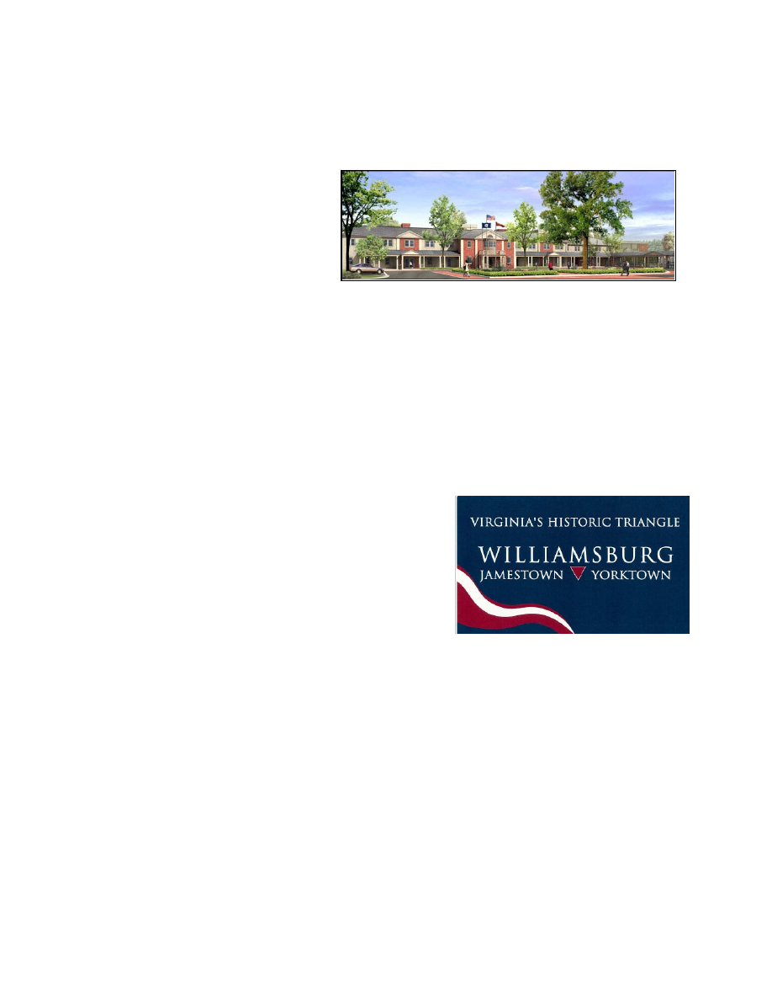
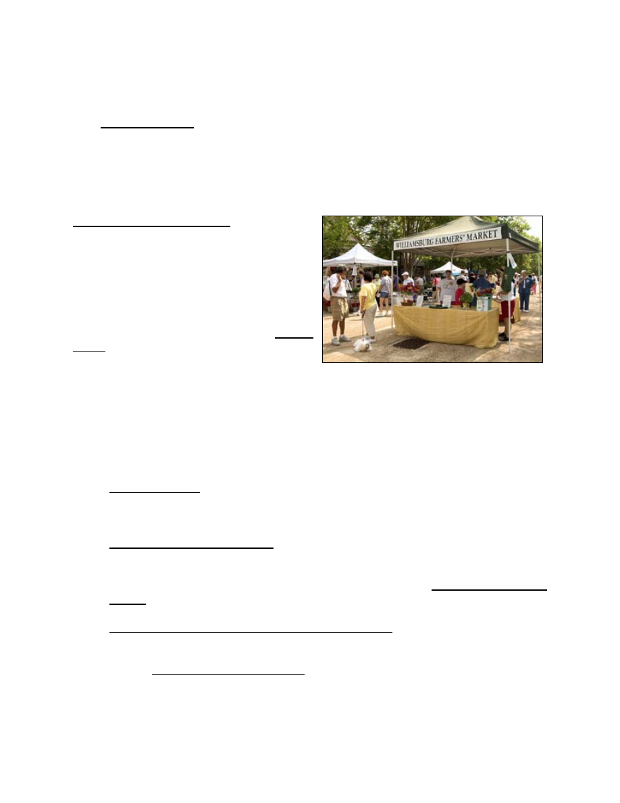

1
TO:
Mayor and City Council
DATE:
March 17, 2006
SUBJECT: City Manager's Budget Message
INTRODUCTION
As I present the fiscal 2007 Proposed Budget, I first want to discuss the larger context of
the fiscal condition and outlook for the City of Williamsburg.
Looking at our performance in the past, and, more importantly, our opportunities and
challenges ahead, there is ample justification for both encouragement and caution. There
are both sunshine and clouds in the forecast, but, I believe, more reason for optimism than
pessimism if the city makes wise decisions along the way.
To begin, here is some of the sunshine in Williamsburg’s fiscal forecast:
• The city ended FY 2005 with a General Fund operating surplus of $1.2 million. Over
the last ten years the city has achieved an operating surplus in every year averaging
$1.7 million per year, which has been and will be used for capital projects.
• In addition to operating surplus, the city has consistently used its Sales Tax receipts
($4.2 million annually) for pay-as-you-go capital improvements and debt service
payments, not operating expenses.
• The city has maintained low property tax rates and low water/sewer fees – giving
room to grow these revenues if essential.
• The city has maintained low indebtedness (outstanding principal balance in all funds
is currently $21.6 million) which allows for future borrowing for capital improvements
if needed.
• New tax base is in various stages of development:
¾ Roseland Property Company is expected to invest nearly $200 million in
construction of High Street Williamsburg over the next few years. Starting in
fiscal 2009 taxes from High Street, net of city expenditures for public

2
services, could yield over $2 million annually, per the impact study by
Chmura Economics and Analytics.
¾ Continued institutional investments in the city to be completed this fall include
the reconstructed Williamsburg Lodge and Conference Center by Colonial
Williamsburg; and,
while not directly
taxable, the Adair
Parking Facility and
the Jamestown Road
dormitories of the
College of William and
Mary.
¾ New tax generating developments such as Yankee Candle, Westgate
Timeshares, Ripley’s and Walgreens – all on Richmond Road; and the Health
Evaluation Center located downtown.
¾ Prospective mixed-use development of the 360 acre “Quarterpath at
Williamsburg” project led by Riverside Healthcare Association.
• The region’s tourism industry is striving mightily to generate and serve growing
visitation:
¾ The Jamestown 2007 Commemoration,
America’s 400
th
Anniversary, is taking
flight with a rich schedule of “signature
events;” and 2007 Host Committee
preparations, including Prepare-Care-
Share, a new regional visitor center, and
a new Historic Triangle wayfinding sign
system.
¾ Colonial Williamsburg’s “Revolutionary City” launches this March aimed at
engaging visitors in the story of Williamsburg as never before.
¾ The Williamsburg Area Destination Marketing Campaign (WADMC), the
restructured Greater Williamsburg Chamber and Tourism Alliance, the
Nichols Group Tourism Vision Study…are all pushing toward the goal of
greater cooperation within the Historic Triangle as we compete for business
nationally and globally.
Williamsburg Lodge Rendition
Historic Triangle Wayfinding Sign System
3
¾ The city continues to reinvest tax dollars, over $3.85 million annually, in
tourism promotion and advertising through Colonial Williamsburg, the
Chamber and Tourism Alliance and WADMC.
• The city is striving to improve its governmental performance in such areas as:
¾ Hiring its first Economic Development Manager in 2005, and adopting a
detailed Economic Development Strategic Plan in 2006.
¾ Joining the Virginia Consortium for Performance Measurement aimed to
improve the scope, quality and comparability of governmental productivity
and effectiveness measures.
¾ Ten years of annual Citizen Surveys that rate the quality and value of city
services between “very good” and “excellent,” revealing an atmosphere of
respect and goodwill between Williamsburg citizens and their local
government as we work in partnership to ensure for the city sound financial
condition in the future.
More positive things can be said about the city fiscal future, but we also need to look for the
challenges ahead. Clouds on the fiscal horizon include:
• With only 3% of the land area of the three Historic Triangle jurisdictions, and no
ability to annex, City of Williamsburg’s economic growth potential is limited.
• While Williamsburg, according to the 2000 Census, enjoyed the highest per capita
retail sales by resident in Virginia ($27,130), the city is losing market share to rapidly
expanding James City and York Counties. From 1990 to 2004 the number of
businesses in Williamsburg grew just 9% compared to 71% in James City County
and 49% in York County.
• While Williamsburg, according to the 2000 Census, enjoyed 1.9 jobs per resident,
employment in the city has declined in recent years, standing at 1.4 jobs per
resident in 2003. With the move of Sentara Hospital to York County in 2006, more
jobs will leave the city. Back filling the Williamsburg Community Hospital site with
the William and Mary School of Education is a good idea, but it will not replace the
economic loss of the hospital.
• The city’s budget picture in fiscal 2008 and beyond will likely turn on a few major
developments:
¾ Concerning revenues, rapidly rising residential property reassessments over
the past few years have largely made up for stagnation in room, meal and
sales taxes over the same period. Should residential reassessments level off
4
(which is likely), and, should business based taxes not return to healthy
annual growth - trouble will follow.
¾ Concerning expenditures, the one significant area not under direct City
Council control is the W/JCC school budget. The projections for the next five
years presented by the school administration – for both operating and capital
expense – are staggering. This cost escalation is driven by growth of the
student population in James City County, but impacts the city significantly
under the present school contract for the joint system.
The city will need to continue to watch spending closely over the next several years to
ensure that cash reserves do not fall below City Council policy of retaining in reserve 35
percent of the General Fund Operating Revenues. This can be done by a combination of
balancing operating budgets, deferring capital projects if need be, and borrowing
judiciously.
Looking now at the year immediately ahead, FY 2007, the Proposed General Fund
Operating Budget can be summarized by:
• Projected Revenues of $30,608,172, up by 5.34%.
• Planned Spending of $30,834,983, up by 5.99%.
• Use of Reserves for current spending of $226,811.
• No Change in Tax Rates.
• Personnel increase from 191 to 196, four of which are new public safety positions.
• Allowance for merit pay increases averaging 4.0%.
In the Utility Budget, recommended is an 11% Water and Sewer rate increase, from $2.70
to $3.00 per one thousand gallons, beginning July 2006, per the Five Year Water and
Sewer Rate Analysis.
In the General Fund Capital Improvement Program, a total
of $5,812,627 is projected in new capital spending, excluding
debt service. Important capital projects now under
construction and soon to be completed include Richmond
Road reconstruction and Treyburn Drive construction.
Treyburn Drive Construction
5
In summary, the proposed revenue estimates and spending plan, if executed exactly as
projected in the proposed FY 2007 budget, would result in the following fund balances on
June 30, 2007:
General
Fund
Balance
$15,096,993
Utility Fund Working Capital
$ 4,192,688
Total
Reserves
on
6/30/07
$19,289,683
With the above as an overview, the remainder of the Budget Message discusses a number
of issues that are particularly relevant in understanding and reviewing the proposed budget,
beginning with General Fund revenue projections.
REVENUE PROJECTIONS
Next year (FY 2007) we forecast General Fund revenues of $30,608,172, a 5.34% increase
over the current year (FY 2006) budget amount. Behind the Budget Guide tab is
a detailed explanation of revenues, explaining the legal basis and ten year trends of all
revenue sources. The following is a summary of significant revenue changes in next year’s
budget:
1. Property
Taxes. Property tax projections are based on a total anticipated value of
real estate of $1.452 billion dollars. Assuming no change in the tax rate of $.54 per
hundred dollars of assessed value, we estimate real property tax collections of
$7,650,000 next year, a 12% increase from current year budget estimates. Property
taxes continue to be among the faster growing revenues due to reassessment and
new construction.
Other property taxes include personal property and business property. These
categories are showing growth, but not as much as real estate taxes. All property
taxes (real and tangible) taken together are expected to generate $10,302,700, an
8.8% increase. Personal Property Tax – predominately the “Car Tax” – is based on
a fixed state payment for car tax relief of $773,572, plus local collections estimated
at $408,411. This means the amount of car tax relief to the taxpayer will be 65%.
Property taxes account for about 34% of General Fund revenue, compared to an
average of 50% to 60% or more in most jurisdictions in Virginia. This means that
rising property tax receipts are not as helpful to the bottom line as they are in most
other localities, but still critical to balancing the budget in 2007.
2.
Other Local Taxes. Other local sources of taxation include various consumer utility
taxes and franchise fees, business licenses and prepared food and lodging or "room
and meal" taxes. The estimate for room and meal tax collections is projected to total
$3,825,000 for room tax, a 1.9% decrease; and $5,475,000 for meal tax, a 0.5%
6
decrease, over last year’s adopted budget. These estimates assume continued flat
to negative performance of the city’s tourism economy. The room tax estimate
does not include the $2.00 destination marketing surcharge for additional tourism
promotion, which is a separate line item in the budget of $1.8 million. Last year we
had good reasons to hope we would turn the corner this year and see a return to
growing profits, but we have not yet seen the numbers turn. Therefore, it is best to
continue to project no growth in FY 07.
Taken together, all local sources of taxation are expected to generate $24,758,300,
a 3.6% increase over the current year budget.
3.
User Fees. User fees include various license and permit fees, including building
permits, and various charges for service. Licenses and Permits are projected to
increase by 24.5%, primarily due to projected commercial and residential building
activity. Modest fee increases in FY 07 will be proposed by separate ordinance
covering fire inspection, signs, rezoning, site plans, erosion control, and Board of
Zoning Appeals. Other charges for service and miscellaneous (which includes Park
and Recreation fees, cemetery fees, and royalties) are projected to be near level on
average. Revenue recovery for Emergency Medical Service transport was
introduced in the FY 06 budget. It is projected to yield $250,000 to assist with the
rising cost of emergency medical service.
4.
Fines and Forfeitures. This category covers court fines – mostly for traffic
violations, parking fines, and code violation fines. It is expected to decrease by
4.1% to $231,300, reflecting fewer traffic citations and parking tickets.
5.
Revenue From Use of Money and Property. The interest earning estimates
($775,000 in the General Fund and $120,000 in the Utility Fund) are based on
assumed earnings of 4.4% on daily accounts, and 4.4% on longer-term accounts.
Additionally, the property rental estimate is $466,600, a 29.4% increase, covering
the Community Building, Transportation Center, City Square, and the Prince George
Parking Garage. The growth in this account is due to increasing use of the Prince
George Parking Garage, and higher rental payment by Williamsburg Area Transport
(WAT) for use of the Transportation Center as its hub as WAT transitions to a
Regional Transit Authority.
6.
Revenue From the Commonwealth. Revenue from the state government in the
amount of $2,714,951, which includes support for constitutional officers and both
categorical and non-categorical aid, are estimated to increase by 9.3% based on the
improved state financial picture. The estimate of Sales Tax for Education of
$790,951 shows a 11.7% increase over the estimate last year.
7
EXPENDITURE ISSUES
Next year we have proposed General Fund operating expenditures of $ 30,834,983, an
increase of 5.99% over the current year adopted budget. Broken down in five large
categories:
FY 2006
Adopted
Budget
FY 2007
Proposed
Budget
Percent
Increase/
(Decrease)
Police and Fire Departments
$ 6,268,028
$ 7,020,163
12.0%
Other City Departments
$ 8,856,913
$9,428,443
6.45%
Constitutional Officers and Judicial
$ 1,712,563
$ 1,715,055
0.15%
Education and Library
$ 7,225,569
$7,473,680
3.43%
Outside Agencies and Health
$ 5,028,497
$5,197,642
3.37%
The Proposed Budget recommends a net increase of five personnel positions in the
General Fund, and none in the Utility Fund. If adopted, total full time equivalent city
positions in both funds will stand at 196. Changes in expenditures worthy of note are:
1.
Salary Ranges and Pay. The city’s Merit Pay Plan gives management the flexibility
to target increases where most needed. Our goal should be to remain reasonably
competitive on compensation within the limits of revenue growth. Therefore, I am
recommending the following:
•
Increase in Pay Ranges of 3.0%, in order to account for the rise in wages and
the rise in the Consumer Price Index in calendar year 2005 of 3.4%. (The range
increase does not in itself change anyone’s salary and therefore has no direct
impact on the budget.)
•
Average Merit Increase allowance of 4.0%, costing $320,000 in salary
increases, to be applied per the city’s Merit Pay Plan as detailed in the Personnel
Manual.
•
The merit increase will hold our employees on average to 97.0% of the
middle of their salary ranges.

8
2.
Personnel Positions. As explained in more detail under the departmental headings,
the total number of positions in the city increases from 191 to 196 in the proposed
budget:
DEPARTMENT POSITION GRADE
Police Department
Communication Operator (2)
5
Police
Officer
6
Fire Department
Firefighter
6
Code Compliance
Combination Inspector
6
3.
Health Insurance. The city's health plan is largely self-insured. Anthem is paid a set
amount to administer the plan, but the city keeps savings when actual costs fall
below the "premium,” and pays more when costs exceed the premium. That liability,
however, is capped at 125% of premiums through excess insurance. Savings to
date have created a reserve, $570,956 as of the end of FY 2005, to fund losses
should losses exceed the amount budgeted in any given year. Therefore, we
budget for the expected loss only. Based on experience so far this year, we have
included a 5.25% increase in funds budgeted for health insurance over the current
year budget in the total amount of $991,260.
4.
Dental Reimbursement Plan. On City Council’s agenda for the April 13, 2006
meeting will be a recommendation to terminate the city’s dental insurance plan in
favor of a new dental reimbursement plan. Funding in the budget for the existing
plan will be used to fund the new plan. Depending on the level of usage, it may be
necessary to use part of the self insurance reserve fund for the new plan in its first
year.
5.
Employee Legal Service Plan. A second proposal for an employee benefit change –
also subject to separate approval by City Council – deals with basic estate
documents for permanent full time city staff. This proposal is for the city to assist
employees obtain wills, a durable power of attorney, and directions for end of life.
This program, if approved, would be funded from the Non-Departmental “Employee
Benefit Initiative” line item in the amount of $20,000.
6.
Virginia Retirement System. VRS sets the contribution rate for the city based on
annual actuarial studies. Our rate beginning July 1, 2006 will increase from 14.25%
to 16.27%. Based on our projected payroll next year we expect to pay $1,388,009
to fund employee VRS retirements, a 20.7% increase over the current budget.
7.
General Administration. The City Council, Clerk of Council and City Attorney’s
budgets for next year reflect little change from the prior year. The City Manager’s

9
budget reflects a decrease of 6.7% with removal of the new Economic Development
Manager position to a separate account.
8.
Economic Development. Two new budget accounts have been created. One for
the Economic Development Manager in the amount of $108,305. The other titled
“Non-Departmental” expands the prior “Operating Contingency” account to include a
new $50,000 “Economic Development” Contingency. This money can only be used
for City Council approved economic development initiatives, enabling the proposals
in the city’s new “Economic Development Strategic Plan.”
9.
Joint Courthouse and Judicial Functions. The Joint Courthouse Agreement, dated
December 1996, between the city and James City County, governs cost sharing not
only for taking care of the new courthouse, but for judicial functions related to the
Courthouse, including: Circuit Court, General District Court, Juvenile and Domestic
Relations Court, Clerk of the Circuit Court, Commonwealth Attorney, and
City/County Sheriff. The Courthouse Agreement provides that the city and county
will determine population based on the annually updated Hampton Roads Data Book
published by the Hampton Roads Planning District Commission. The estimate of
city cost is $330,000, up 3.1% from the prior year.
10. Police. The Police Department proposed budget is $3,951,529, up from the current
year 12.8%. This increase is due primarily to adding one entry level police officer
and two emergency communicators (dispatchers). The police officer is needed to
service our expanding community policing activities (school resource officer
program, crime prevention, neighborhood outreach, etc.). The two emergency
communicator positions are needed to provide a third person in the E911 Center at
the busiest times of the day, where now the two person staff can be overwhelmed
by the level of activity.
11. Fire. Last year three new firefighter/EMT positions – one per shift – were added to
the budget. These firefighters have helped
the fire department maintain adequate on
duty staffing given the constant pressure of
time away for leave and training. The three
positions were also an investment in
staffing which will be required to open an
auxiliary fire station (nine positions total) on
Ironbound Road adjacent to High Street.
The budget will not support three more
firefighters in FY 07 – even with a full year
of EMS fees. So, I am recommending one new position next year so as not to lose all
momentum toward the goal of staffing the auxiliary station.
12. Parking Garage. Based on experience in the first two years of operation, we have
set the Prince George Parking Garage operating budget at $124,304. This expense

10
is covered by $190,000 in projected revenues. Revenues in excess of operating
costs will help pay debt service on the structure.
13. Regional Jail and Youth Detention. Funding for the city’s share of the regional jail
is expected to be $852,523, a decrease of 2.6% from the current budget. The city
share of jail costs is based on an average usage rate of 17.4% over the past five
years. Each member jurisdiction (Williamsburg, James City, York and Poquoson)
pays for their share of the inmate population based on the location where the
offense occurred and the arresting authority. Local costs have climbed as State
contributions have been stagnant, and the number of city inmates has climbed to
about 86. I expect the city’s share to grow over the next few years as the “five year
averaging” formula catch up with our current inmate population. Other detention
related expenditures are the Middle Peninsula Juvenile Detention Commission at
$120,258, which is projected to decrease by 4.1%; and Colonial Group Home
Commission at $64,074, which is proposed to increase by 27.0% due to additional
staff for the youth group home run by the Commission.
14. Code Compliance. The Code Compliance budget of $521,805 is up 20.3%. The
increase is due primarily to upgrading our part time, non-permanent property
maintenance inspector position to a full time, permanent position. A fuller
explanation of this is found in the context of reorganization in the Planning
Department as set forth under item 15. below.
15. Planning Department. Planning Department next year is proposed at $478,255, an
increase of 5.3%. A reorganization of the department is planned in order to better
deal with anticipated development and property maintenance activities - the Zoning
Official position will be upgraded to the Zoning Administrator, the Zoning
Administrator will become the Principal Planner, and the part-time Property
Maintenance Inspector will become a full-time Code Compliance Inspector. As part
of the reorganization, the Codes Compliance Division will assume responsibility for
fire protection systems reviews and inspections, erosion and sedimentation control,
graffiti abatement and cross connection control. To help offset the additional costs
associated with the reorganization, fee increases are proposed for both codes
compliance and planning (fire inspections, signs, rezoning, site plans, board of
zoning appeals, erosion and sediment control). These increases when coupled with
anticipated development (a 20-30% increase) should generate $50,000 in additional
revenue for FY07.
16. Information Systems. The budget covers the contracts for hardware and software
maintenance for the city’s information systems, copiers, and video system (including
Channel 48). The budget includes funding for an annual PC replacement program,
and development of our GIS system, for a total of $301,700, a 9.7% increase from
the prior year, but a 5.3% increase from the level of the budget two years ago.
17. Public Works. Public Works divisional budgets totaling $3,126,956 (Engineering,
Streets, Landscape, Cemetery, Mosquito Control, Facilities Maintenance) average

11
2.5% above the current year amounts. The street resurfacing annual commitment is
held constant at $460,000. The cost of refuse collection is estimated at $809,800,
up 2.7% from the prior year’s budget.
18. Human Services. Salaries in the Human Services Department are funded in part by
the Commonwealth, but the department is a city operation. Local funding
supplements State funding to allow the department to provide a full array of human
services. The local budget for next year is estimated at $600,987, a 7.7% increase
over the prior year.
OUTSIDE AGENCY ISSUES
Nearly one-half of the city's General Fund
budget goes to agencies and activities not
under City Council's direct operational control.
Funding relationships are often complex, and
vary in degrees of funding discretion possible
from year to year. The "Notes on Funding
Relationship," contained under the Budget
Guide tab, help explain the city's role in
providing financial support to these agencies
and activities.
Background documentation from outside agencies is contained in the Appendix, or
provided under separate cover, as in the case of the School and the Library budgets.
A number of issues concerning outside agency funding requests for the coming year need
to be highlighted:
1.
Health Services. The four agencies named below provide health services to city
residents, workers and visitors. The total recommended funding for FY 07 is
$459,297, an increase of 4.8% over the current year.
The Peninsula Health District budget request to the city is $133,917, a 4.7%
increase over the current year.
The Human Services Advisory Board has recommended Olde Towne Medical
Center (Williamsburg Area Medical Assistance Corporation or WAMAC) receive
funding of $86,000, a 2.4% increase over the current year; and that the
Comprehensive Health Investment Program (CHIP) receive $17,760, an 11.4%
increase over the current year.
Finally, the Colonial Services Board, the agency through which the city provides
mental health and retardation services to its residents, requests a 5.2% increase in
city contribution to $221,620, based on the multi-jurisdictional funding formula.
12
2.
Schools. Based on the School Board's budget at this point in time, and State
funding based on General Assembly action, we can expect a city contribution to the
operational budget in the amount of $6,634,386, a 3.3% increase from the current
year. The final amount will be determined by formula as set forth in the current five-
year city/county Joint School Agreement effective July 1, 2002, and the final amount
of State support. As a result of current and past school agreements, the city's
proportional share of funding for the schools over the past decade has declined,
even when funding in absolute dollars increases, and that trend will continue next
year. City children numbering 756 now account for 7.72% of the children enrolled in
the system. Under the Joint School Agreement, in FY 07 the city will pay a share
equal to its enrollment times a factor of 1.18. So, the city continues to pay a
premium to participate in the joint system. Based on the current enrollment split, the
city’s contribution will be 9.10% and the county’s 90.90%, of local funding for the
schools. FY 07 is the last year under current agreement with James City County.
3.
Library. The Williamsburg Regional Library is funded under the revised library
agreement with James City County, effective July 1, 1999. That agreement calls for
funding of operational costs based on the proportion of circulation by residency.
Based on the library’s figures, the city/county circulation ratio for fiscal year 2004
was 16.73% city, and 83.27% county. (We have agreed to use these numbers due
to a computer conversion problem with verifying the FY 05 numbers.) The Library’s
proposed budget of $5,864,289 is a 4.7% increase, which would result in an
estimated city contribution of $829,294.
4.
Human Service Agencies. The city's Human Services Advisory Board, as
requested by City Council, has evaluated Human Services Agency requests for
funding, and made its recommendations to City Council. Their analysis and
recommendations are in the Appendix to this document. The proposed budget is a
7.85% increase from the current year in the total amount of $90,931. The proposed
budget follows the Human Services Board’s recommendations in all respects.
5.
Community and Economic Development Agencies. The city has supported
tourism advertising and promotion through Colonial Williamsburg and the
Williamsburg Area Convention and Visitors Bureau – now the Greater Williamsburg
Chamber and Tourism Alliance.
This year Colonial Williamsburg Foundation has requested level funding of
$1,300,000, and I have recommended that amount. The Greater Williamsburg
Chamber and Tourism Alliance has requested funding of $963,000 (which includes
$100,000 for Chamber operations), which is $100,000 more than the prior year. I
am recommending that the city fund the current year amount. During the three
years from FY 02 through FY 05, room tax receipts in the city declined 8.0% (from
$4,055,033 to $3,729,652); and meal tax receipts increased a scant 2.1% (from
$5,288,427 to $5,401,105). While I am aware of the chicken/egg argument with
regard to investing more while times are hard, the fact remains that without growing

13
tourism revenues to invest in tourism advertising and promotion, the city can not
both meet its many other obligations and spend more on promotion.
The proposed budget also includes an estimated $1,800,000 of pass through
funding from the $2.00 room surcharge to the Williamsburg Area Destination
Marketing Committee’s “GoWilliamsburg” campaign. This brings the total city tax
dollars for tourism promotion to $3,863,000.
In addition to tourism promotion, the city support is recommended for a number of
other agencies that make important economic development and community
development contributions to Williamsburg:
Williamsburg Redevelopment & Housing Authority
$35,000
Hampton Roads Planning District Commission
$10,988
Peninsula Council for Workforce Development
$ 5,847
Hampton Roads Economic Development Alliance
$11,465
Thomas
Nelson
Community
College
Hampton
Campus
$
9,624
Williamsburg
Campus
rental
$20,000
Hampton Workforce Development Center
$10,500
Jamestown/Yorktown
Foundation
$10,000
Colonial Soil and Water District
$ 2,535
Hampton
Roads
Partnership
$
5,325
Hampton
Roads
Film
Office $
7,500
Williamsburg
Land
Conservancy
$
5,000
Heritage
Humane
Society
$16,000
Williamsburg Farmers’ Market
$ 4,000
Crossroads
Coordinating
Committee
$10,000
Jamestown
2007
Host
Committee $15,000
Jamestown 2007 Commemorative Stamp
$ 1,500
Military and Federal Facilities Alliance
$ 5,360
Community
Services
Coalition
$
5,000
Total including CWF and CVB
$4,153,644
This year two new regional community/economic development projects have been
added: the Hampton Roads Film Office requested $15,000 ($7,500 recommended);
Hampton Roads Military and Federal Facilities Alliance ($5,360 based on a regional
per capita formula). Detailed information on these initiatives is provided in the
Appendix. Regarding the Williamsburg Land Conservancy, I am recommending that
the city return to a $5,000 funding level instead of the requested $10,000. The
Community Services Coalition, which operates the Historic Triangle Community
Services Center, received $2,500 last year, and is now requesting another $5,000
for debt reduction and deferred maintenance of their building. Another request for
funding comes from Historic Jamestowne for $15,000. I have not recommended

14
adding Historic Jamestowne to the city’s list of agencies receiving annual funding;
Council did fund Historic Jamestowne $10,000 in FY 06. Because the city’s main
destination Colonial Williamsburg receives no funding support from either county,
the City Council’s support in the past for Historic Jamestowne, or Jamestown
Settlement for that matter, is very generous. I am recommending however, that the
city support the Commemorative Jamestown Stamp project with $1,500 because it
should not be reoccurring and it is tied to the Jamestown 2007 Commemoration.
6.
Cultural. The Williamsburg Arts Commission has again performed the task of
receiving, evaluating, and recommending funding for the arts. Their report is copied
in the Appendix. They recommend local arts funding of $135,770, slightly less than
the current year. Of this amount, the city contribution would be $62,885. This
assumes a state arts commission challenge grant of $10,000, and county funding of
$62,885. The State grant last year was $10,000. The Arts Commission is also
recommending a $76,000, one time, Jamestown 2007 Arts Grant Program. The city
share of this program would be $22,800.
City sponsorship for the fourth annual “Festival Williamsburg” is provided again in
the amount of $50,000.
7.
Transportation. James City County has requested $247,770 to support our new,
unified regional transit system, Williamsburg Area Transport. Originally, the current
year budget was $154,200. The unified system, as envisioned in the Long Range
Public Transportation Plan, combines JCC Transit, Colonial Williamsburg, and the
William and Mary systems. A new governing structure by a regional authority will be
in place based on action by the General Assembly, and a new Executive Director
has been hired. At this point I have recommended the city fund the amount of
$225,000, pending more analysis of the funding formula for WAT.
Under Transportation are two additional regional partnerships to promote
alternatives to highway travel. These are continuing support for Virginia’s High
Speed Rail Coalition, but at a reduced amount of $1,000; and third year support for
the Newport News/Williamsburg Airport Task Force in the amount of $6,000 to
support efforts to expand air service for the Peninsula.
CAPITAL IMPROVEMENT PROGRAM
Revenue to fund the CIP comes from 1% Sales Tax Receipts and funds reserved for capital
improvements.
Here are some of the highlights from this year's update of the Five Year Capital
Improvement Program:

15
• Richmond Road Reconstruction from Brooks Street to New Hope, including
underground wiring, is under construction throughout FY 06 and into FY 07. Project
completion is scheduled for December 2006.
• Stage One of Treyburn Drive (design and engineering) and Stage Two (right-of-way
acquisition and permitting) has been completed. Treyburn Drive Stage Three
(construction) is now underway. The road should be open for traffic well before July
2007 as “High Street” construction is in full swing.
• The northern end of Quarterpath Road is planned for widening and improvement
concurrent with the development of Quarterpath Village neighborhood under a
Public-Private Transportation Project (PPTA) proposal. At present, the CIP does not
contain funds for underground wiring as part of this project.
• Traffic signal analysis and (if warranted) installation on Richmond Road at either
Waltz Farm Drive or Yankee Candle entrance.
• Several projects deal with enhancement to city highways and byways. These include
renovation of ByPass and Page Street bridges, underground wiring on Braxton
Court, underground wiring on east Lafayette Street, guardrail replacement on
Jamestown Road and ByPass Road, and new sidewalks on Capital Landing Road.
• Continuing the multi year upgrade to Kiwanis Park as a softball complex, refurbishing
floors at Quarterpath Recreation Center,
developing Strawberry Plains neighborhood
park and beginning development of a new
regional park: 22 acre “Redoubt Park”
preserving Civil War earthworks on
Quarterpath Road.
eginning a project to result in a new
Emergency Operations Center and Fire Administration annex to the Fire Station
located in the downtown/City Square area. (This is the first step in a long range plan
to develop the City Square Municipal Center and meet future space needs for all city
departments.)
• Replacing the E911 call receiving equipment in the Emergency Communications
Center, and replace laptop computers in all police vehicles.
• Purchasing hardware and software to convert our existing AutoCAD mapping system
into a full Geographic Information System (GIS).
• Continuing the Braxton Court Community Development Block Grant Project for
neighborhood improvement in the west end of Scotland Street.
16
• Funding of the School’s CIP request – subject to action by James City County Board
of Supervisors per the Joint School Agreement – including the third high school and
the next elementary school.
• City participation in the construction of a new animal shelter in partnership with the
adjoining counties and the Heritage Humane Society; and assistance to the YMCA
in York County.
The Planning Commission’s review of the draft CIP, used in developing the final
recommendation, is provided under the Capital Improvements tab.
UTILITY FUND OVERVIEW
The Utility Fund projects $4,637,400 in operating revenues and a 1.7% increase in
operating expenditures. A 11% water rate increase, $2.70 to $3.00 per 1000 gallons, is
recommended. Increases in the amount of “availability” fee for new construction are also
recommended.
A Rate Analysis for the Utility Fund is provided under the Appendix tab. The analysis
shows a future with rate increases, and a future with no rate increases. The Rate Analysis
is updated annually as part of the budget process. Expensive ”new water” from King
William Reservoir, purchases of more watershed land, and renewal/replacement of
infrastructure, are all in our future. Unlike nearly all other area jurisdictions, the city still
does not charge separately for sewage collection and pumping, but rather bears this cost
using water revenue. City rates for water and sewer combined continue to be exceptionally
low in the region, as shown in Exhibit 3 of the Rate Analysis.
The Rate Analysis also demonstrates the need for substantial increases in the water and
sewer availability and connection fees. Because “new water” for future customers will be
much more expensive than water from our existing supply (Waller Mill), customers in the
future need to pay more to tap into the city water and sewer system.
NEXT STEPS
The budget process now moves from the staff level "formation" phase, to the Council and
public level "adoption" phase.
The Budget Work Sessions, principally to look at outside agencies, are scheduled for
Monday, March 20 and Tuesday, March 21. The school budget will be reviewed at the
Monday, April 10, City Council work session. The formal budget hearing will be advertised
for the April 13 City Council meeting. Adoption is scheduled for the May 11 Council
meeting.
Jackson C. Tuttle
City Manager